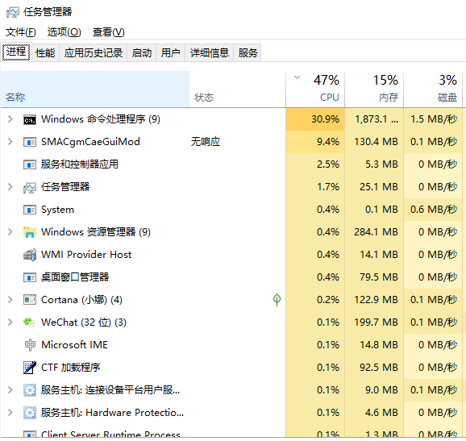

线程与进程进程(Processs):实例化的、正在运行中的程序代码及其数据集，是系统分配资源的基本单元。程序一般是存储在磁盘中的， 当某个程序要被执行时，首先要将其加载进内存中，加入内存在执行中的实体就是一个进程。
线程(Thread):轻量级的进程，是进程中的一个执行单元。是被系统独立调度和分派的基本单位。
单线程程序，当有任务执行时，只能按照顺序一个一个执行，如果时多线程程序的化，可以几个任务“同时”执行。 多线程可以提高程序的运行效率，但是并不是线程越多效率越高，可以将线程理解为执行的一个程序片段。